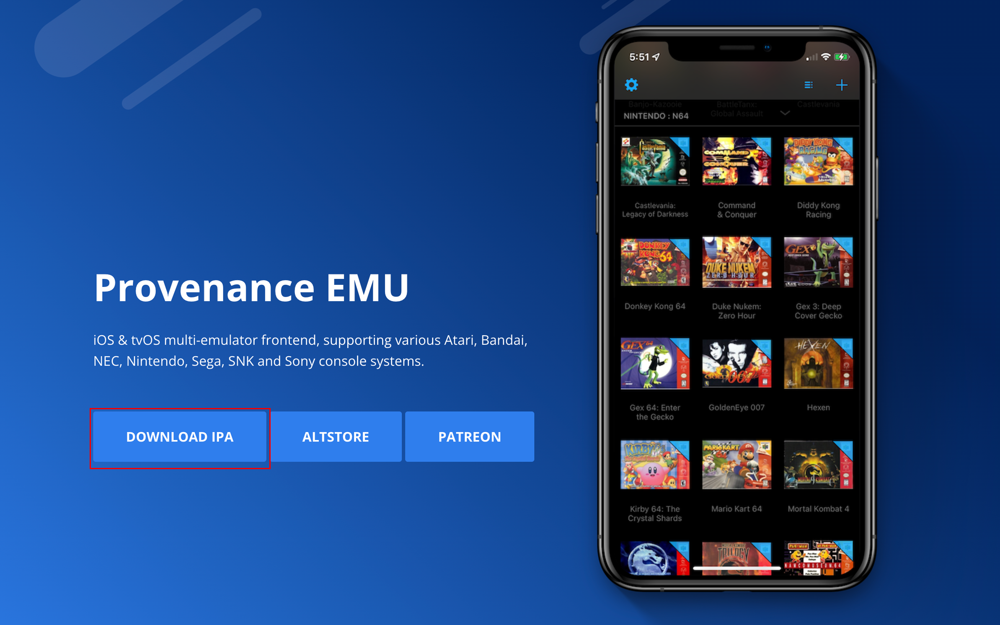
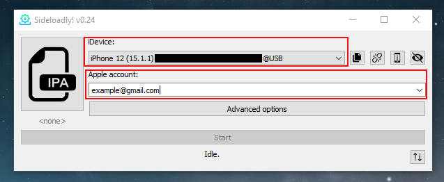
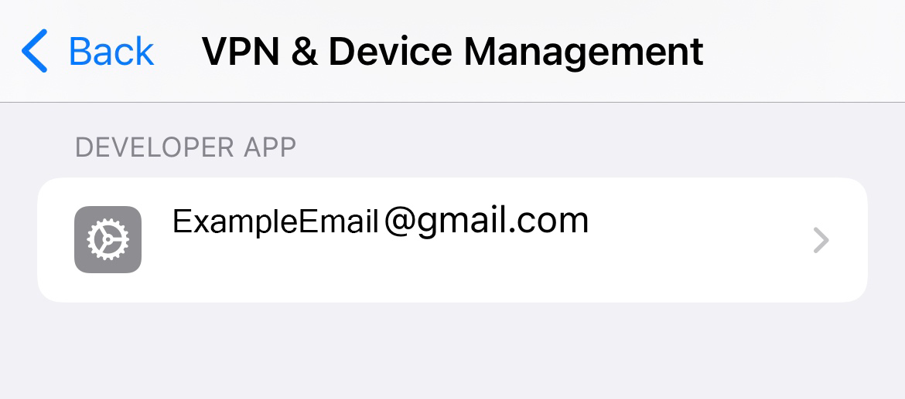
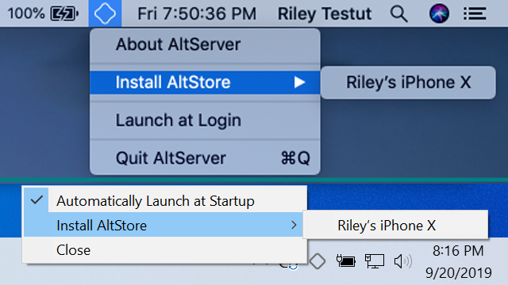
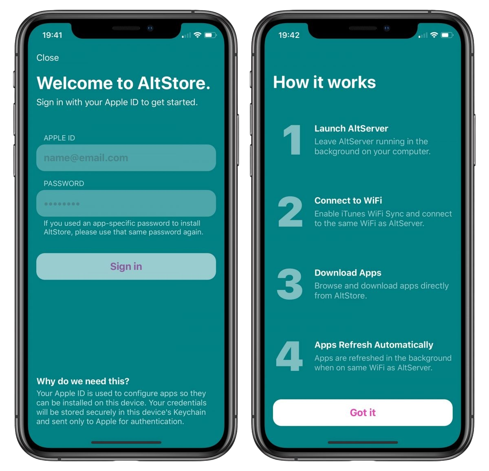

Sideload là gì?
Sideloading là quá trình cài đặt các chương trình lên thiết bị thông qua các nguồn khác ngoài những nguồn được cung cấp bởi nhà sản xuất thiết bị.
Apple yêu cầu tất cả các ứng dụng được ký số, còn được gọi là 'được phê duyệt' trước khi ra mắt trên thiết bị của bạn.
Ứng dụng có thể được ký số theo hai cách.
1. Sử dụng Apple ID cá nhân (Miễn phí)
2. Sử dụng các dịch vụ ký số ứng dụng bên ngoài (Một số miễn phí / Một số trả phí)
Hướng dẫn dưới đây sẽ giới thiệu phương pháp đầu tiên, sử dụng Apple ID miễn phí để cài đặt ứng dụng với máy Mac hoặc PC.
Phương pháp này giới hạn 3 ứng dụng cho mỗi Apple ID và các ứng dụng phải được ký số lại sau 7 ngày.
Để cài đặt ứng dụng sideload mà không cần PC hoặc giới hạn 7 ngày, hãy xem xét sử dụng một dịch vụ ký số.
Cài đặt ứng dụng sideload với Apple ID
Những gì bạn cần:
1. Tài khoản Apple miễn phí (có thể sử dụng tài khoản tạm thời)
2. Máy tính PC hoặc Mac
3. Sideloadly hoặc
Altstore
Sideloadly
Để bắt đầu, tải xuống ứng dụng iOS mà bạn muốn cài đặt.
Các ứng dụng iOS được đóng gói dưới dạng tệp IPA và có thể được tìm thấy từ nhiều nguồn.
Trong hướng dẫn này, chúng tôi sẽ cài đặt Trình giả lập Provenance từ Provenance-emu.com như một ví dụ.
Tải xuống tệp IPA (ứng dụng iOS) vào máy tính của bạn.

Sau khi bạn đã cài đặt Sideloadly trên Mac/PC của bạn, khởi chạy chương trình.
Đăng nhập bằng Apple ID mà bạn muốn sử dụng (tài khoản tạm thời cũng được), và đảm bảo thiết bị của bạn được chọn trong menu trên cùng như hình ảnh dưới đây.

Sau khi hoàn thành các bước này, chỉ cần kéo tệp IPA của bạn vào Sideloadly và chương trình sẽ làm phần còn lại!
Sau khi Sideloadly đã cài đặt ứng dụng của bạn, bạn phải tin tưởng ứng dụng sideloaded từ ứng dụng cài đặt của bạn để nó có thể khởi chạy trên thiết bị của bạn.
Di chuyển đến Cài đặt > Chung > VPN & Quản lý Thiết bị để tin tưởng ứng dụng của bạn, như hình ảnh dưới đây.

Sau khi bạn đã tin tưởng ứng dụng của mình, bạn đã hoàn thành! Hãy tận hưởng ứng dụng sideloaded mới của bạn!
Altstore
Đầu tiên, bạn cần cài đặt Altserver trên PC/Mac của bạn từ altstore.io
Để biết cách cài đặt AltServer trên máy tính của bạn, hãy xem trang Câu hỏi thường gặp về Altstore
Sau khi bạn đã cài đặt và chạy Altserver, cài đặt ứng dụng Altstore vào thiết bị của bạn như hình ảnh dưới đây.

Sau khi ứng dụng Altstore đã được cài đặt trên thiết bị của bạn và được tin tưởng từ trong Ứng dụng Cài đặt, khởi chạy ứng dụng trên thiết bị của bạn và đăng nhập vào tài khoản Apple mà bạn muốn cài đặt ứng dụng sideload.

Bây giờ mà Apple ID của bạn đã được liên kết với Altstore, bạn có thể tải xuống và cài đặt ứng dụng với Altstore!
Lưu ý - Các ứng dụng được cài đặt bằng Sideloadly hoặc Altstore phải được ký số lại sau mỗi 7 ngày.
Với Sideloadly, kéo tệp IPA cho ứng dụng của bạn vào Sideloadly một lần nữa và nó sẽ ký số lại cho bạn.
Với Altstore, nhấp vào "Làm mới" trong ứng dụng Altstore trong khi Altsever đang chạy trên máy tính của bạn và nó sẽ ký số lại các ứng dụng cho bạn.
Ký số lại các ứng dụng sau 7 ngày sẽ không làm mất dữ liệu, các ứng dụng chỉ cần làm mới và bắt đầu khởi chạy lại như bình thường.
Nếu bạn muốn cài đặt không giới hạn ứng dụng mà không cần sử dụng PC hoặc không có giới hạn 7 ngày, hãy xem trang dịch vụ ký số của chúng tôi để biết thêm thông tin.